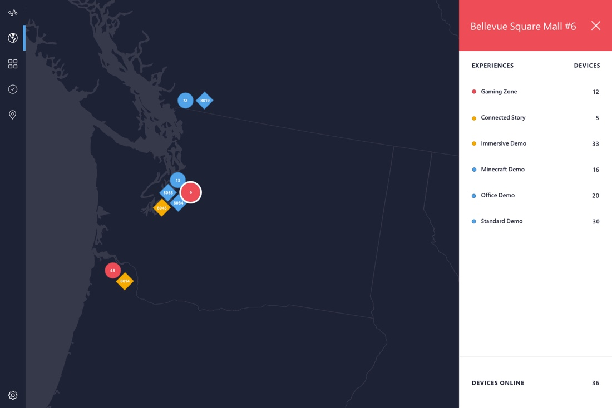
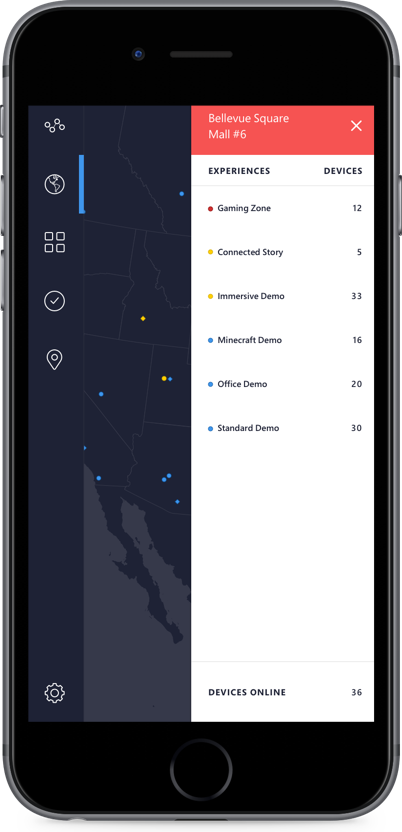

Visual Design
With over 100 stores and 12,000 devices, the project began from illustrating the problem for a macro to micro scale. A few whiteboarding sessions and wireframe sketches led to a concept of using a map with filters to drill down into regions, stores, and devices.

